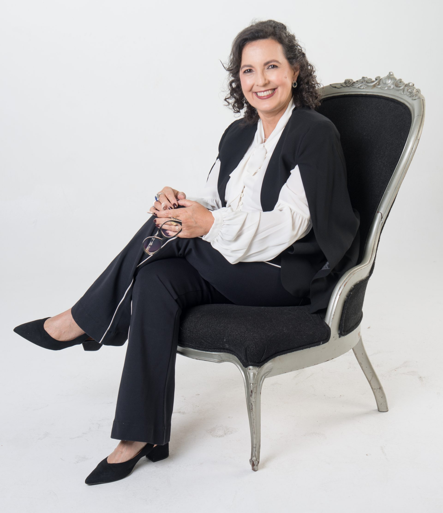

Psicanalista · Conflitos Humanos
Passei décadas ouvindo histórias de conflito — primeiro como desembargadora, depois como psicanalista. Trabalho com pessoas e organizações que precisam entender o que está em jogo antes de tentar resolver.
Atendimento individual · Intervenção organizacional · Online e presencial
Desembargadora aposentada
TJMG · Décadas na magistratura
Psicanalista · EBP
Psicóloga CRP 04/[PREENCHER] · Doutora
30+
anos na magistratura
EBP
Escola Brasileira de Psicanálise
TJMG
Coord. Justiça Restaurativa
2
carreiras. Uma vocação.
"O conflito revela o que o cotidiano esconde."
— Hilda Teixeira da Costa
Sobre
Durante décadas como magistrada no Tribunal de Justiça de Minas Gerais, aprendi que por trás de cada processo havia uma pessoa — com suas contradições, seus vínculos rompidos, sua dor não dita. Casos que chegavam à Justiça eram, na maioria das vezes, conflitos humanos que nunca encontraram outro espaço para existir.
Essa percepção me levou à psicanálise. Primeiro como curiosidade intelectual. Depois, como vocação. Hoje, ofereço um espaço que poucos analistas podem: a escuta clínica profunda aliada à experiência de quem passou décadas dentro das estruturas de poder, conflito e relação humana.
Trabalho com pessoas que sofrem nos seus vínculos — do trabalho, da família, do amor — e com organizações que precisam transformar conflito em entendimento antes que ele se torne irreversível.
Como ex-coordenadora de Justiça Restaurativa no TJMG, conduzi processos de mediação e reparação entre partes em conflito real — uma metodologia que incorporo ao trabalho com organizações.
Psicanálise & Conflito
Psicanálise não é sobre silenciar o que dói.
É sobre entender de onde vem — e o que isso revela sobre quem você é.
Serviços
Cada trabalho começa com uma escuta. O formato, o ritmo e o escopo são definidos a partir daí — não ao contrário.
Um espaço de escuta onde você pode falar com liberdade sobre o que te pesa — nos vínculos do trabalho, da família, das relações afetivas. A psicanálise não oferece soluções rápidas, mas abre caminhos que a pressa do dia a dia não permite ver.
Online ou presencial · Semanal ou quinzenal · Conversa inicial gratuita
Agendar sessão inicial →Para empresas e equipes onde o conflito relacional já está comprometendo resultados. Começa com um diagnóstico gratuito — a partir dele, é desenhado um processo de intervenção com escopo, formato e duração adequados à situação. Cada caso é único.
Online ou presencial · Escopo e duração definidos no diagnóstico · Diagnóstico inicial gratuito
Falar sobre o projeto →Para quem
Atendimento individual
Pessoas que estão no sofrimento — nos vínculos, no trabalho, nas escolhas — e que querem entender o que está em jogo antes de tentar resolver.
Intervenção organizacional
Empresas, equipes de liderança ou sócios em ruptura relacional — com impacto direto nos resultados — que precisam de um processo estruturado com começo, meio e fim.
Dúvidas frequentes
Psicanálise é uma abordagem clínica que trabalha com o inconsciente — tudo aquilo que influencia nosso comportamento, nossas escolhas e nosso sofrimento sem que percebamos. Diferente de abordagens de apoio ou aconselhamento, ela não busca dar respostas nem orientar o que fazer. Ela abre espaço para que você mesmo entenda o que está acontecendo — e o que quer fazer com isso.
A Escola Brasileira de Psicanálise (EBP) é uma das principais instituições de formação psicanalítica do Brasil, ligada à Associação Mundial de Psicanálise (AMP). Sua orientação é lacaniana — ou seja, segue a tradição do psicanalista francês Jacques Lacan. Ser formada pela EBP representa um percurso rigoroso de formação clínica e teórica, reconhecido internacionalmente.
Os dois. Tanto o atendimento individual quanto o trabalho com organizações podem ser realizados online ou presencial, conforme a preferência e a necessidade de cada caso. A conversa inicial gratuita geralmente acontece online, mas pode ser presencial também.
É uma conversa de aproximadamente 20 minutos, sem custo e sem compromisso. O objetivo é simples: entender o que te traz aqui e verificar juntos se faz sentido trabalharmos juntos. Você pode agendar diretamente pela agenda online, no horário que preferir.
Começa com um diagnóstico gratuito — uma conversa com os responsáveis para entender o que está acontecendo, quem são as partes envolvidas e qual o impacto do conflito nos resultados. A partir daí, é elaborada uma proposta de intervenção com escopo, formato e duração definidos para aquela situação. Cada caso é único e tratado como tal.
Processo
Tudo começa por aqui — uma conversa gratuita de cerca de 20 minutos, online ou presencial, para entender o que te traz aqui. Não há compromisso nem expectativa: é o primeiro momento de escuta, para verificarmos juntos se faz sentido seguir em frente.
Para quem busca atendimento individual, é uma sessão mais aprofundada para entender o contexto e o que está por trás do sofrimento. Para organizações, é uma reunião de diagnóstico com os responsáveis — onde mapeamos o conflito em toda a sua dimensão antes de propor qualquer intervenção.
Para atendimentos individuais: sessões regulares com a frequência que cada processo pede, online ou presencial. Para organizações: uma proposta desenhada especificamente para aquela situação, com formato, duração e objetivos claros — tudo definido juntos após o diagnóstico.
Contato
A primeira conversa é gratuita e sem compromisso. Escolha o melhor horário na agenda — ou envie uma mensagem e responderei em até 24 horas.
Conversa inicial · 20 minutos · Gratuita
Substituir pelo link real após criar conta em cal.com
Prefere WhatsApp? Clique aquiResponderei em até 24 horas